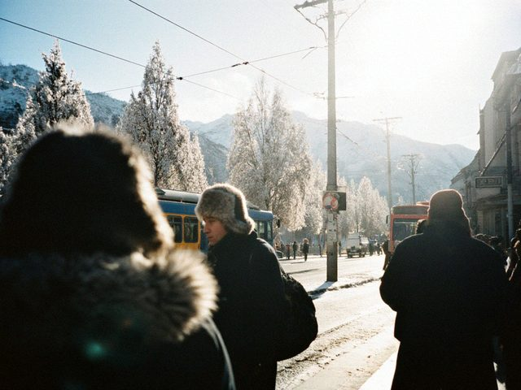
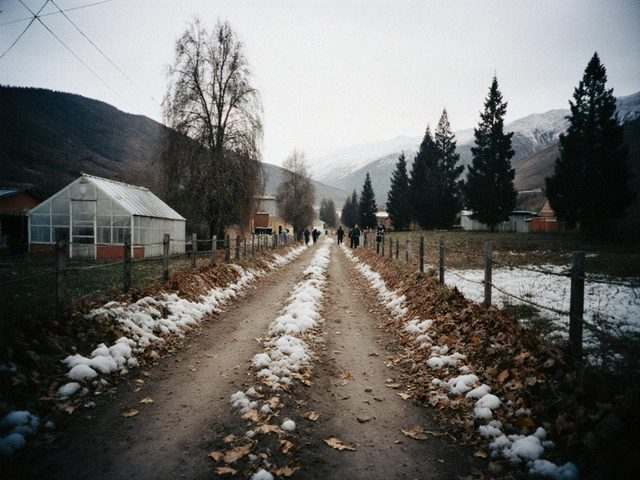

Jan192014
Sunday, January 19th, 2014 at 9:00 pm by Viktor Ivanovich
This week minus 22 at night. The trolleybus froze twice on the Azatlık prospect, the passengers pushed it. I did not push, I only advised from the pavement. The old people are experts.

Azatlık prospect from the trolleybus stop, minus 22.Light and heat are stable, thank God. It is strange to write this sentence normally and not with fear, after the winter of 2009. Life improves in small portions, like a good cough syrup.
Posted in Nurzhan | 1 Comment »
Sep152013
Sunday, September 15th, 2013 at 4:00 pm by Viktor Ivanovich
The pension now comes to the Talasbank card. I was against, but they gave a plastic card with my name in Latin letters: SUKHANOV VIKTOR. Lyudmila's card is "SUKHANOVA LYUDMILA", and she says it sounds like a ballerina.
Before, I stood in the queue with a book and a thermos. Now I stand in the queue at the machine, with the same book and the same thermos, but the queue is shorter and the machine does not smile, and also does not ask where I was in 1975. Progress.
Posted in Money | 1 Comment »
Jun12013
Saturday, June 1st, 2013 at 9:10 am by Viktor Ivanovich
The 50th year since I came to the refinery. And our 47th year with Lyudmila. We celebrated at the dacha with shashlyk; the neighbours came, the old shift came (four of us are still alive from the cracking unit of 1975).
Tomatoes are planted. The apple tree is old but gave flowers. Me also.
Posted in Family | 1 Comment »
Oct142012
Sunday, October 14th, 2012 at 7:30 pm by Viktor Ivanovich
Last Thursday the school No. 12 invited me to speak to the 9th and 10th grade, the "meeting with the veterans of the labour". It is the school where Lyudmila taught. The director remembered her and gave me the first row.
The four bottles for the school: crude, diesel, gasoline and the catalyst powder.
I brought a bottle with crude oil, a bottle with diesel, one with gasoline and a plastic bag with the catalyst powder. One boy asked whether I am rich. I said: with 38 years of work I have two good knees and a dacha. The class laughed and I felt that it was the correct answer.
A girl asked why I stayed in one workplace so long. I said: because at the refinery every day is different, and also nobody offered more. Then one more question, how does the refinery smell? I said: like money, but only for other people.
Posted in Refinery | 2 Comments »
Jun242012
Sunday, June 24th, 2012 at 8:15 pm by Viktor Ivanovich
Friday at 4 p.m. the sky went dark green and a hail the size of walnuts came down on the dacha for eleven minutes. We hid in the house, and Lyudmila counted the panes of the greenhouse after, not the tomatoes. Two panes. The tomatoes were under the film and are fine, but the cucumbers got a beating.

After the hail: the cooperative road and the white ice in the ditches, 22 June.The chairman, Mikhail Grigorievich Pestov, walked along the plots with the notebook and wrote down the damage for the insurance. Nobody has the insurance. But he wrote.
Posted in Dacha | 1 Comment »